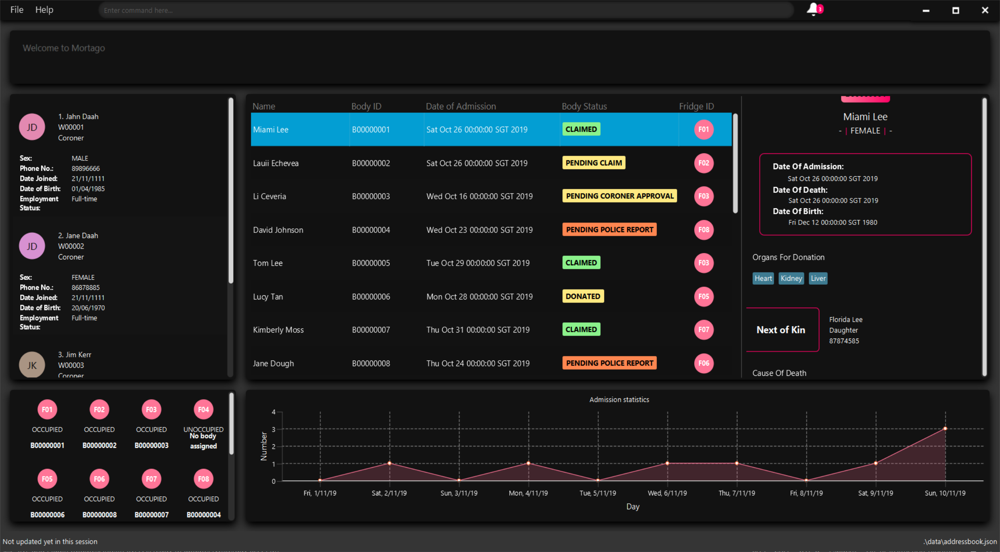

By: CS2103T-T10-2 Since: Sep 2019 Licence: MIT
1. Welcome to DukeCooks
1.1. Who are we?
DukeCooks is a revolutionary lifestyle application, specially designed for health-conscious individuals. DukeCooks runs on the Command-Line Interface (CLI), allowing you to execute different commands, all within a single line. You will be able to manage various aspects of your lifestyle, from your diet, to exercises and health records.
(Think of a nice one-liner?)
Now you can use DukeCooks to manage all your lifestyle needs, all within a single app.
1.2. Using the User Guide
Everything about DukeCooks can be found in this User Guide.
Want quick navigation? You can jump to different sections by clicking on the links located in the table of contents.
Having trouble understanding this guide? You may refer to the following table for the different symbols and formatting used throughout the guide.
<item> |
Items in angle brackets are compulsory parameters |
[item] |
Items in square brackets are optional parameters |
[icon tip] |
Useful tips and tricks |
[icon important] |
Additional information that is good to know |
[icon warning] |
Important pointers to take note |
Came across some unfamiliar terms? Head over to our Glossary section for some common terms used in this guide.
Want a quick summary of all the available commands? You can find them at our Command Summary section.
1.3. Quick Look at DukeCooks
(Include UI Screenshots + explain the components)
1.4. Understanding DukeCooks
DukeCooks consists of 5 main features. You may click on the following features below to find out more about the feature and their available commands.
-
Dashboard - (Fill in a simple line for your feature?)
-
Recipe Book - (Fill in a simple line for your feature?)
-
Exercise - (Fill in a simple line for your feature?)
-
Health - (Fill in a simple line for your feature?)
-
Diary - Create diary posts to share with your friends and family!
2. Quick Start
-
Ensure you have Java
11or above installed in your Computer. -
Download the latest
DukeCooks. -
Copy the file to the folder you want to use as the home folder for DukeCooks.
-
Double-click the file to start the app. The GUI should appear in a few seconds.
 -
Refer to [Features] for details of each command.
3. Commands
3.1. General
Before we begin, let’s look at some common commands that will be used through Duke cooks.
3.1.1. Add commands: add
Have you just created a new dish, or tried a new exercise? Then you may want to save your new discoveries to DukeCooks with the Add command! Add commands will be used whenever you want to create new things, be it exercises, tasks, recipes or health records.
3.1.2. Edit commands: edit
Edit commands will be used to edit whatever entries you have made to any part of DukeCooks.
3.1.3. List commands: list
List commands will show you all your saved entries. They are also useful to navigate to different parts of DukeCooks.
3.1.4. Find commands: find
Find commands will enable you to search through all of your data to find entries matching your keywords.
3.1.5. View commands: view
View commands will be used to open up a one specific entry within DukeCooks.
3.1.6. Delete commands: delete
Delete commands will be used to delete a specific entry within DukeCooks.
3.1.7. Clear commands: clear
Clear commands will be used to clear all saved data.
3.2. Dashboard
Can’t track all your deadlines? Look through the available commands in this section and start managing them.
3.2.1. Going to the Dashboard
A quick way to get to the Dashboard and start getting work done!
Command: dashboard
3.2.2. Adding a task
Let’s start by using the add command to add some tasks into DukeCooks!
Command: add task
Format: add task tn/insert task here td/ insert date here
|
Note
|
When entering the date for a task, please follow the given format: day/month/year |
Example usage: add task tn/Bake a Cake td/29/10/2019

3.2.3. Editing a task's details
Made some typos when adding a task?
Fret not! You are able to make changes to them.
Command: edit task
Format: edit task index number
Example usage: edit task 1 tn/Bake cupcakes td/30/10/2019

3.2.4. Removing a task
Decided that this task is not needed?
Well you can delete them off from DukeCooks.
Command: delete task
Format: delete task index number
Example usage: delete task 1

3.2.5. Marking a task as complete
Finished with a task?
Check it off the list!
Command: done
Format: done index number
Example usage: done 2
-
1: Enter the done command into the dashboard
-
2: The task is now marked as RECENTLY COMPLETED.
-
3: The progress bar will be increased

Hard at work? Marking 5 new tasks done will give a surprise!
A pop up window with an encouraging message will be displayed for extra motivation.
|
Note
|
A task index number is available at the left side of the task’s name. |
3.2.6. Finding tasks
For those who want to know what are the tasks relevant given a keyword.
Command: find task
Format: find task keyword
Example usage: find task go

3.2.7. Viewing complete/incomplete tasks
Look at all those tasks!
To view completed tasks:
Command: list taskcomplete
For incomplete tasks:
Command: list taskincomplete
3.3. Recipe Book
Need to organise your large collection of recipes? Look no further! You will be able to perform the various recipe-related commands listed in this section.
3.3.1. Adding a recipe: add recipe
Adds a recipe into the recipe book.
Format: add recipe n/<name> i/<ingredients>… cal/<calories> carb/<carbs> fats/<fats> prot/<protein>
|
Note
|
All nutritional value information should be entered according to their amount in grams. |
Examples:
-
add recipe n/Chicken Rice i/Chicken i/Rice cal/666 carb/55 fats/44 prot/30
Creates a recipe with name "Chicken Rice", ingredients "Chicken" and "Rice", with nutritional information of 666kcal, 55g carbs, 44g fats, and 30g protein.
3.3.2. Editing a recipe: edit recipe
Edit a recipe according to a specified index.
Format: edit recipe <index> [parameters]
The possible parameters are:
-
n/<name>: edits name -
i/<ingredient>: adds an ingredient -
i-/<ingredient>: removes an ingredient only if it exists in the recipe -
cal/<calories>: edits calories -
carb/<carbs>: edits carbs -
fats/<fats>: edits fats -
prot/<protein>: edits protein
Examples:
-
edit recipe 1 n/Chicken Noodle cal/500
Updates the first listed recipe to have the name "Chicken Noodle" and edit it to contain 500 calories. -
edit recipe 2 i/Noodle i-/Rice
Removes the ingredient "Rice" from the first listed recipe, and adds the ingredient "Noodle".
3.3.3. Listing your recipes: list recipe
Lists all recipes.
Format: list recipe
Examples:
-
list recipe
Lists all recipes saved in the recipe book.
3.3.4. Finding a recipe: find recipe
Finds recipes with names containing a specified keyword.
Format: find recipe <keyword>
Examples:
-
find recipe Chicken
Lists all recipes containing "Chicken" in their name.
3.3.5. Deleting a recipe: delete recipe
Deletes recipe according to a specified index.
Format: delete recipe <index>
Examples:
-
delete recipe 1
Deletes the first recipe listed within the recipe book.
3.3.6. Clearing the recipe book: clear recipe
Clears all recipes stored in the recipe book.
Format: clear recipe
|
Important
|
This action cannot be undone |
Examples:
* clear recipe
Deletes all recipes within the recipe book.
3.3.7. Viewing a recipe: [coming in v2.0]
3.3.8. Giving a recipe an image: [coming in v2.0]
3.3.9. Giving a recipe a difficulty level: [coming in v2.0]
3.3.10. Giving a recipe preparation timing: [coming in v2.0]
3.4. Meal Plans
Want a way to plan out your meals for an entire week? Using meal plans is a great way do that. Use the following meal plan commands to plan your weekly consumption!
3.4.1. Add a meal plan: add mealplan
Adds a new meal plan into the meal plan book.
Format: add mealplan n/<name> day1/[name]… day2/[name]… day3/[name]… day4/[name]… day5/[name]… day6/[name]… day7/[name]…
|
Note
|
You are only able to add recipes that you have within your recipe book. Edits to recipes within your recipe book will be reflected in the affected meal plans. Deletion of recipes will also delete them from any meal plan containing them. |
Examples:
-
add mealplan n/Empty
Creates an empty meal plan with the name "Empty". -
add mealplan n/Keto day1/KFC day2/4 Fingers day3/Texas Chicken day4/Arnolds day5/Popeyes day6/Nene day7/Wing Stop
Creates a meal plan with the name "Keto" and the listed meals under each indicated day.
3.4.2. Editing a meal plan: edit mealplan
Edit a meal plan according to a specified index.
Format: edit mealplan <index> [parameters]
The possible parameters are:
-
n/<name>: edits name -
day1/<recipe>: adds a recipe to this day -
day1-/<recipe>: removes a recipe only if it exists in this day -
day2/<recipe>: adds a recipe to this day -
day2-/<recipe>: removes a recipe only if it exists in this day -
day3/<recipe>: adds a recipe to this day -
day3-/<recipe>: removes a recipe only if it exists in this day -
day4/<recipe>: adds a recipe to this day -
day4-/<recipe>: removes a recipe only if it exists in this day -
day5/<recipe>: adds a recipe to this day -
day5-/<recipe>: removes a recipe only if it exists in this day -
day6/<recipe>: adds a recipe to this day -
day6-/<recipe>: removes a recipe only if it exists in this day -
day7/<recipe>: adds a recipe to this day -
day7-/<recipe>: removes a recipe only if it exists in this day
Examples:
-
edit mealplan 1 n/Bulking day-1/Salad day4/Mashed Potatoes
Updates the first listed meal plan to remove the recipe "Salad" from Day 1 and add the recipe "Mashed Potatoes" to Day 4.
3.4.3. Listing your meal plans: list mealplan
Lists all meal plans.
Format: list mealplan
Examples:
-
list mealplan
Lists all meal plans saved in the meal plan book.
3.4.4. Finding a meal plan: find mealplan
Finds meal plans with names containing a specified keyword.
Format: find mealplan <keyword>
Examples:
-
find mealplan Chicken
Lists all meal plans containing "Chicken" in their name.
3.4.5. Finding a meal plan containing a certain recipe: find mealplanwith
Finds meal plans with a specified recipe name.
Format: find mealplanwith <recipe name keyword>
Examples:
-
find mealplanwith Chicken Rice
Lists all meal plans containing "Chicken Rice" in any of the meal plan days.
3.4.6. Delete a meal plan: delete mealplan
Deletes meal plan according to a specified index.
Format: delete mealplan <index>
Examples:
-
delete mealplan 1
Deletes the first meal plan listed within the meal plan book.
3.4.7. Clearing the meal plan book: clear mealplan
Clears all meal plans stored in the meal plan book.
Format: clear mealplan
|
Important
|
This action cannot be undone |
Examples:
* clear mealplan
Deletes all meal plans within the meal plan book.
3.4.8. Viewing a meal plan: [coming in v2.0]
3.5. Health Records
Going for a health checkup soon? You can use the commands in this section to manage your health records, all within DukeCooks!
3.5.1. View Health Data: list health
Views Health Records of specific type.
Format: list health t/<type>
|
Important
|
By default, DukeCooks will show health records of past 1 month if [time period] is not specified. |
Examples:
-
list health t/weight
Shows users weight of the past 1 month as of today.
3.5.2. Add Health Data: add health
Adds a health record of specified type with input value.
Format: add health t/<type> val/<value> dt/<dd/MM/yyyy HH:mm>
Examples:
-
add health t/weight val/60 dt/21/10/2019 12:00
Adds a new blood pressure record of 120/80 mmHg as of today 9am.
3.5.3. Edit Health Data: edit health
Edits an existing health record of specified record ID with input value to overwrite.
Format: edit health <index> val/<value>
-
You can view <index> once you have entered list health t/[type] command.
Examples:
-
edit health 1 val/220
Edits the health record with index 1 to 220.
3.5.4. Delete Health Data: delete health
Deletes an existing health record of specified record ID.
Format: delete health <index>
-
You can view <index> once you have entered list health t/[type] command.
Examples:
-
delete health 1
Deletes the health record with index 1.
3.5.5. View Medical Appointments: [coming in v2.0]
Shows all the medical appointment for the month.
Format: view appt [time period]
Examples:
-
view appt
View all the medical appointments for the month. -
view appt 3 month
View all the medical appointments of the next 3 months.
3.6. Add Medical Appointment: [coming in v2.0]
Adds a new medical appointment where user can include an optional note.
Format: add appt <date time> [note]
-
DukeCooks will prompt reminder when appointment is in a weeks time.
Examples:
-
add appt 31/12/2019 8am
Add a new medical appointment for 31st Dec 2019, 8AM. -
add appt 31/12/2019 8am thomson medical - blood glucose
Add a new medical appointment for 31st Dec 2019, 8AM with note thomson medical - blood glucose .
3.6.1. Edit Medical Appointment: [coming in v2.0]
Edits an existing medical appointment.
Format: edit appt <Appt ID> [date time] [note]
-
<Appt ID> refers to the unique identifier attributed to each medical appointment upon creation.
-
At least one of the optional fields must be provided
-
Existing value will be overwritten with the new inputs given
Examples:
-
edit appt APPT0001 CGH - blood glucose
Edits the note to CGH - blood glucose. -
edit appt APPT0001 31/12/2019 12pm
Change the medical appointment to be 31st Dec 2019, 12PM. -
edit appt APPT0001 31/12/2019 1.30pm CGH - blood glucose
Change the medical appointment to be 31st Dec 2019, 1.30PM with CGH - blood glucose note.
3.6.2. Delete Medical Appointment [coming in v2.0]
Deletes an existing medical appointment.
Format: delete appt <APPT ID>
-
<APPT ID> refers to the unique identifier attributed to each medical appointment upon creation.
Examples:
-
delete appt APPT0001
Deletes the medical appointment of APPT0001.
3.6.3. Print Health Records to PDF [coming in v2.0]
Generates a PDF copy of health records.
Format: print health <type> [MORE_TYPES] [time period]
-
If more than one type of data to print, the data will be displayed in the order of input (refer to example).
|
Important
|
By default, DukeCooks will generate pdf with health records for the past 1 month if [time period] is not specified. |
Examples:
-
print health glucose
Generates a PDF copy of all the blood sugar records for the past month as of today -
print health glucose blood pressure
Generates a PDF copy of all the blood sugar and blood pressure records respectively from the past month as of today. Data on blood sugar will come before blood pressure. -
print health glucose blood pressure 01/01/2019 - 31/08/2019
Generates a PDF copy of all the blood sugar and blood pressure records respectively from 1st Jan 2019 to 31st Aug 2019.
3.7. Workout Tracker
Planning your next workout? You can refer to the commands in this section to help you get started with your exercise regime in DukeCooks.
3.7.1. Adding an exercise: add exercise
Adds an exercise to exercise list. You will be required to specify the primary muscle of the exercise, its intensity
as well as its name. Optional fields like secondary muscles and exercise details such as reps, sets can also be added.
The following shows the fields and which are optional:
* Name
* Primary Muscle
* Intensity
* Secondary Muscles (optional)
* Number of sets (optional)
* Number of repetitions (optional)
* Timing (optional)
* Distance (optional)
* Exercise Weight (optional)
The format is as follow:
Format: add exercise n/EXERCISE_NAME p/PRIMARY_MUSCLE sm/SECONDARY_MUSCLE i/INTENSITY
s/SETS r/REPETITIONS d/ DISTANCE w/WEIGHT t/TIMING
Examples:
-
add exercise n/Bench Press p/Chest i/medium sm/Triceps s/5 r/5 w/80 kg
Output: New Exercise added: Bench Press
3.7.2. List Exercise: list exercise
List exercises which matches optional parameters specified eg. muscle type/intensity.
Format: `list exercise m/MUSCLEGROUP
3.7.3. Delete exercise: delete exercise
Deletes exercise of specified index.
Format: delete exercise <index>
3.7.4. View exercise: view exercise
View all the details of an exercise of the specified index.
Format: view exercise<index>
3.7.5. Add calorie: [coming in v2.0]
Tracks calorie burned per rep/set of the exercise in kcal.
Format: calorie <index> <calories>
3.7.6. Check History: [coming in v1.4]
Checks the history of all the pass workouts as well as their statistics eg. exerciseWeight used, number of times exercise is carried out, workouts that use this exercise.
3.7.7. Preset Exercises:
If the list of exercises is empty, a list of preset exercises are generated.
3.7.8. Create Workout: add workout
Adds a workout to workout list. The app will then prompt you to add exercises to the workout.
Format: add workout n/WORKOUTNAME
3.7.9. Push Workout: push exercise
Adds an exercise of the index shown, to a workout in the index shown. You can specify whether to use your own
new set of exercise details (reps, sets etc) or use the default one already in the Exercise object.
Format: push exercise wi/WORKOUT_INDEX ei/EXERCISE_INDEX s/SETS r/REPS d/DISTANCE t/TIMING w/WEIGHT
3.7.10. List Workout: list workout [coming in v1.4]
List workouts which matches optional parameters specified eg. muscle type/intensity/total time.
Format: list workout m/MUSCLEGROUP i/INTENSITY t/TOTALTIME
3.7.11. Delete workout: delete workout [coming in v1.4]
Deletes workout of specified index.
Format: delete workout <index>
3.7.12. Run Workout: run [coming in v1.4]
Runs a workout with a timer. Shows the details of the exercise: instructions, reps, sets, exerciseWeight as well images if provided. After workout, stats will be automatically be updated and weights of workout will be increased accordingly.
Format: run <index>
3.7.13. Schedule Workout: [coming in v1.4]
3.7.14. Track Body Fitness: [coming in v1.4]
3.8. Diary
Want to share great recipes and workout tips with your friends? Look through the available commands in this section and start sharing!
3.8.1. Taking a closer look into the Diary feature
In the diary feature, you will be able to look through all your available diaries and pages at one quick glance! Not only that, you can also enter different commands within the command box.
Still confused? You can refer to the following diagram for a clearer picture.

3.8.2. Adding a diary
Let’s get started by adding a diary using the add diary command!
Command: add diary
Format: add diary n/ <diary name>
Example usage: add diary n/ Desserts Galore
-
Enter the command in the command box and hit the Enter key.
-
If the command succeeds, you should see the following message in the result display and a new diary named "Dessert Galore" will be added.

3.8.3. Deleting a diary
Accidentally created an unwanted diary? No worries! You can remove it with our delete diary command.
Command: delete diary
Format: delete diary <index>
Example usage: delete diary 1
-
Enter the command in the command box and hit the Enter key.

-
If the command succeeds, you will see the following message in the result display and the diary wll be removed.

3.8.4. Adding a page
Want to customise your diary further? You can do so by adding pages with our add page command.
Command: add page
Command format: add page n/ <diary name> t/ <page title> i/ <image path> desc/ <page description>
Example usage: add page n/ Asian Food t/ Pho i/ src/main/resources/images/pho.jpg desc/ Simply the best!
-
Enter the command in the command box and hit the Enter key.

-
If the command is successful, you should see that a new page will be added and the screen shows the following.

3.8.5. Deleting a page
Want to remove a page? We’ve got that covered with our delete page command.
Command: delete page
Format: delete page <index> n/ <diary name>
-
Enter the command in the command box and hit the Enter key.

-
If the command is successful, the page will be removed and you will see the following in the result display.

3.8.6. Viewing a diary
Want to switch over to another diary? You can do so through our view diary command.
Command: view diary
Format: view diary <index>
Example usage: view diary 2
-
Enter the command in the command box and hit the Enter key.

-
If the command is successful, you should see the following result.
3.8.7. Link Recipes: [Coming in v2.0]
Creates a new food page in the specified diary, using pre-existing recipes
Format: link recipe <recipe exerciseName> /to <diary exerciseName>
-
Diary should already exist
-
Recipe should already exist
|
Note
|
Deleting recipes will not delete the linked pages in diary! |
Examples:
-
link recipe Caesar Salad /to Healthy Living
Creates a food page about Caesar Salad and adds it to the diary named Healthy Living
3.8.8. Link Exercises: [Coming in v2.0]
Creates a new exercise page in the specified diary, using pre-existing exercises
Format: link exercise <exercise exerciseName> /to <diary exerciseName>
-
Diary should already exist
-
Exercise should already exist
|
Note
|
Deleting exercises will not delete the linked pages in diary! |
Examples:
-
link exercise Crunch /to Healthy Living
Creates an exercise page about Crunch and adds it to the diary named Healthy Living
3.8.9. Link Health Records: [Coming in v2.0]
Creates a new health page in the specified diary, using pre-existing records
Format: link records <record id> /to <diary exerciseName>
-
Diary should already exist
-
Records should already exist
|
Note
|
Deleting health records will not delete the linked pages in diary! |
Examples:
-
link records BP129391 /to Healthy Living
Creates a health page about BP129391 and adds it to the diary named Healthy Living
3.8.10. Edit Diary: [Coming in v2.0]
Allows user to edit some basic information in the diary
Format: edit <diary exerciseName>
-
Diary should already exist
Examples:
-
edit Healthy Living
Users will now be able to edit basic information in the diary named Healthy Living
3.8.11. Edit Page: [Coming in v2.0]
Allows user to edit basic information in the specified page of the specified diary
Format: edit page <index> <diary exerciseName>
-
Diary should already exist
-
Index should be a positive integer
Examples:
-
edit page 2 Healthy Living
Users will be able to edit some basic information in page 2 of the diary named Healthy Living
4. Command Summary
Recipe Book
-
Add recipe :
add recipe <exerciseName>
e.g.add recipe Chicken Rice -
Delete recipe :
delete recipe <exerciseName>
e.g.delete recipe Chicken Rice -
List recipes :
list recipe -
View recipe :
view recipe
e.g.view recipe Chicken Rice
Dashboard (Analytics & Suggestions)
-
Get suggestions :
suggest -
Get random food suggestions :
suggest food -
Get new food suggestions :
suggest new food -
Get statistics :
stats -
Get food statistics :
stats food -
Get exercise statistics :
stats exercise
Health Records
-
View health data :
view health t/<type>
e.g.view health t/glucose -
Add health data :
add health t/<type> val/<value> dt/<date> <time>
e.g.add health t/glucose 120 dt/21/10/2019 12:00 -
Edit health data :
edit health <index> val/<value>
e.g.edit health 1 120 -
Delete health data :
delete health <index>
e.g.delete health 1
Workout Tracker
-
Adding an exercise :
add exercise <exerciseName>
e.g.add exercise Inclined Bench Press -
List exercise :
list exercise [MUSCLEGROUP] [INTENSITY] -
Delete exercise :
delete exercise <index> -
View exercise :
view exercise<index> -
Create workout :
workout <exerciseName> -
List workout :
list exercise [MUSCLEGROUP] [INTENSITY] [TOTALTIME] -
Delete workout :
delete workout <index> -
Run workout :
run <index>
Food Diary
-
Create Diary :
create diary
e.g.create diary Healthy Living -
Delete Diary :
delete diary <diary exerciseName>
e.g.delete diary Healthy Living -
Add page :
add page <type> <diary exerciseName>
e.g.add page health Healthy Living -
Delete page :
delete page <index> <diary exerciseName>
e.g.delete page 2 Healthy Living